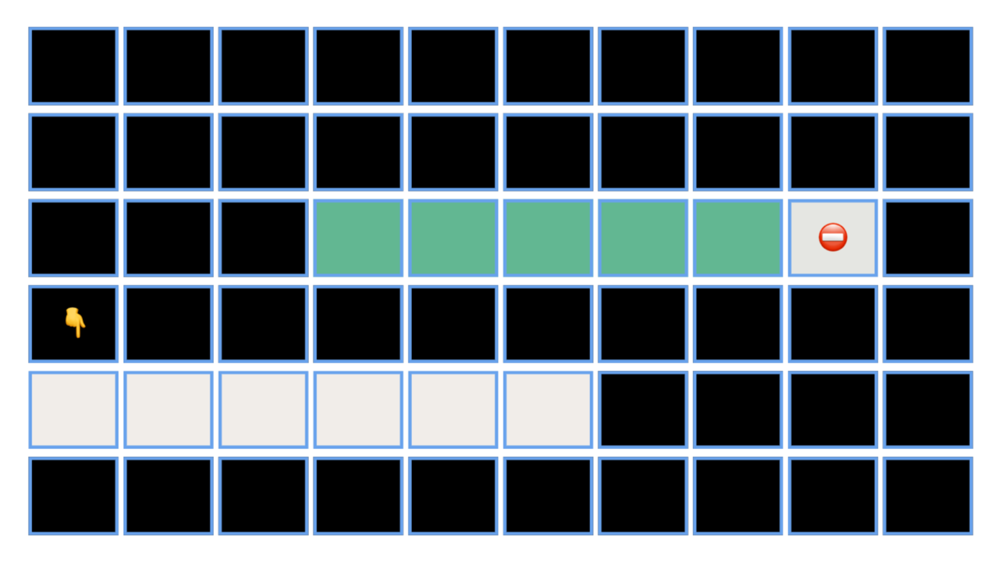
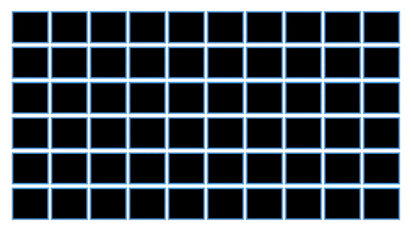

2 Of Playlists and Tweet Threads:
Representing Sequential Information
So far, we have worked with atomic types, which is to say variables that can hold a “single kind of data” for us — like integers, characters, strings, booleans, and so on. Often, however, we need to work with compound types, which is to say, a bunch of these things taken together. For example, you may have sensed that when we spoke of maintaining a set of cards earlier with 52 booleans, it may have been nicer if they could be strung together into a single, unified structure: for one, it saves you having to keep track of a large number of variables, and further, it might be easier — as we will find out — to manipulate the data in response to operations that we may want to support.
When you speak of a bunch of objects, it is useful to agree on whether you interpret the collection as an ordered or unordered set. Consider the following examples:
- Your playlist of happy songs
- A stack of cards
- People living in a house
- Teams that played in the Asia Cup 2022
- Chess pieces on a board mid-game
While some people play their happy songs in shuffle mode, for some the playlist is carefully organized, and the order matters. A stack of cards and chess pieces on a board are clearly collections with a natural sense of order, and one that is very likely to be important. On the other hand, people who live in a particular house or the set of teams that participated in the Asia cup in 2022 can be thought of as sets with no underlying order: of course, if you had to impose one you could cook something up1 (e.g, alphabetical, favorites, and so on). We will focus on storing ordered lists for now and return to sets in due course.
1 For example, the C++ implementation of set maintains a default order even though it is, by nomenclature, modeling unordered sets. On the other hand, the unordered_set data structure in the C++ STL throws all caution to the wind and buys faster operations on average.
There are a few different ways that you can store a list of things in a computer’s memory. Imagine that you are real estate agent and you want to book some houses in a complex for your current and future clients. Stretching your imagination a little bit further, say all houses are numbered from 1 to 1000 and are positioned on a straight line in the natural order (i.e, 2 after 1, 3 after 2, and so on). Some houses are occupied and others are not. If you reserve k houses, management will find some contiguous block of k unoccupied houses and give you the number of the first house in the block. For instance, if you ask for 50 houses, you would get a letter from the management saying 50 houses starting from #420 are yours. If you need 20 more houses later, you would get a letter from the management saying 70 houses starting from #777 are yours. That’s right: they are not obiligied to give you houses #470 to #489, indeed, these may not be avaiailable. They could just give you an additional chunk of 20 houses somewhere else, but sadly that’s not how they roll: them management, them rules. There are also no refunds: you can’t give back reserved houses.
Now here comes our first dilemma: how many houses do we reserve? Say we have 20 clients: it is clear that we need to reserve at least 20 houses, but should we reserve a few more? Reservations are not free, so we don’t want to reserve a very large number of houses either: remember, there are no refunds. But on the other hand, if we reserve too few, and we end up with more clients than the number of houses we’ve reserved, we will be in a sticky situation — worst case some clients may have to move, which is not ideal. You will have to work on coming up with a reasonable estimate of how many clients you will eventually have, and hope for the best.

Over time you find that this business of estimating the number of clients you have is an unpleasant one: both under and overestimates lead to losses, which makes you wonder if there are apartments that have more flexible options. You look around, and why yes, you find a different apartment complex — again a thousand houses on a line neatly numbered 1 to 1000 from left to right, but this time, management reserves one house at a time. You want a new house, you simply ask for one. But there’s a catch: the paperwork here requires you to submit the client’s information, and they directly get their house number. So this is actually quite efficient: the management does all the work and you can reserve exactly what you need. All is well until it’s time for Diwali and you realize you don’t know where your clients are housed, and you can’t send them postcards, sweets, and advertisements.
You could, of course, just call your clients and ask them for their house numbers, but then this requires you to maintain some kind of register, and let us just say that you are not good with that kind of thing. So here’s what you do instead: you only keep the first client’s address, because that’s just one thing that’s easy to remember. Then you ask your i-th client to remember the address of the (i+1)-th client: they are slightly bewildered but you tell them it’s for insurance. Now if you want to pay a visit to your \ell-th client, you just start from your first one, and follow the trail. Peculiar, but works.

Note that with the previous maangement this was never a problem: you had a contiguous block of houses that you allocated sequentially, so your i-th client’s house address was always at hand if you were good with arithmetic or had a calculator: simply add (i-1) to the house number of the first client.
As analogies go this was both unrealistic and imprefect, but I hope it gives you a sense of the main trade-offs involved in the two ways we have to store sequential data — very roughly speaking:
- in contiguous blocks, access is easy, flexibility is hard;
- with elements all over the place, access is indirect but the structure is relatively flexible.
2.1 Arrays
Quoting Wikipedia:
An array is a data structure consisting of a collection of elements (values or variables), each identified by at least one array index or key. An array is stored such that the position of each element can be computed from its index tuple by a mathematical formula.
For example, an array of 10 32-bit (4-byte) integer variables, with indices 0 through 9, may be stored as 10 words at memory addresses 2000, 2004, 2008, …, 2036, (in hexadecimal: 0x7D0, 0x7D4, 0x7D8, …, 0x7F4) so that the element with index i has the address 2000 + (i × 4).[4]
2.2 Linked Lists
Quoting Wikipedia:
A linked list is a linear collection of data elements whose order is not given by their physical placement in memory. Instead, each element points to the next. It is a data structure consisting of a collection of nodes which together represent a sequence. In its most basic form, each node contains: data, and a reference (in other words, a link) to the next node in the sequence. This structure allows for efficient insertion or removal of elements from any position in the sequence during iteration.
More complex variants add additional links, allowing more efficient insertion or removal of nodes at arbitrary positions. A drawback of linked lists is that access time is linear (and difficult to pipeline). Faster access, such as random access, is not feasible. Arrays have better cache locality compared to linked lists.
2.3 Comparison
Given a fully occupied array with n elements v/s a linked list with n elements, here are the costs of some operations that you might want to perform:
| Operations | Arrays | Singly Linked List |
|---|---|---|
| Looking up the i-th element | instant | \approx i |
| Adding a new element at the start | \approx n | instant |
| Adding a new element at the end | \approx n | \approx n |
| Removing the i-th element | \approx n-i | \approx i |
2.4 What should you use?
The correct answer is: it depends. If you expect your lists to be heavily manipulated, then linked lists are likely to be the better choice. On the other hand, if yuo are working with a list of a predictable size (or you at least have a known and reasonable upper bound on the size), and direct access is important to you, then arrays are the way to go. If you are dissatisfied with both methods, then consider transforming your unhappiness into motivation for discovering more sophisticated options!